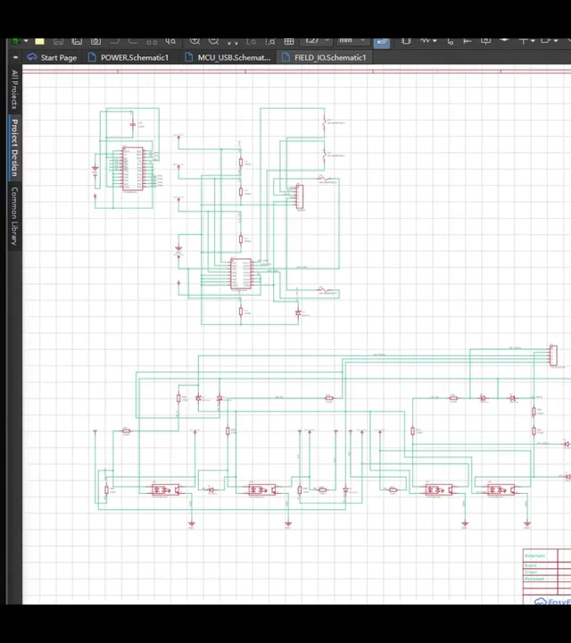
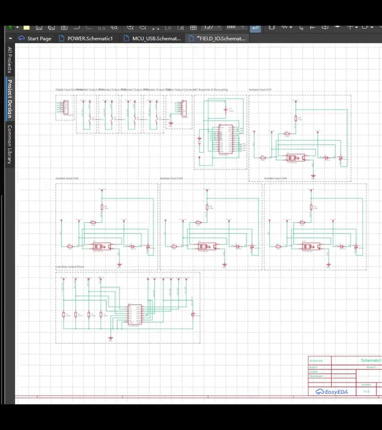

Schematics and boards
Follow three PCB workflows and a schematic reorganization. Each example shows an engineering decision that carries through into an editable EasyEDA document.
BGA2869 2 GHz RF amplifier
The schematic includes an amplifier, two RF ports and its bias network. The ports need to sit on opposite board edges so the RF chain can cross the small PCB in order.
Watch how the placement specifies the signal path at pin level and groups the bias parts near the amplifier. Those instructions give the placement engine a preferred order and a local grouping. Routing then adds the RF traces, ground copper and stitching vias.
In the final 3D view, follow the path from RF1 through the amplifier to RF2. In the editable board, trace length, width and the continuity of the ground return are the next things to inspect.
How pin-level placement rules work →ESP32-C3 field controller
This controller brings together power conversion, USB, CAN, RS-485 and protected field I/O. The demo starts with multi-page schematic generation and carries that connectivity into a single PCB.
Watch for two types of placement decisions. Functional groups keep related parts near one another. Connector and antenna constraints determine how those groups fit around the edges of the board.
After placement, the demo shows power and signal routing, ground planes, stitching vias and a repair pass informed by DRC. The schematic pages and routed board remain editable in EasyEDA.
How checks inform a repair →Four-layer MIMXRT1011 controller
A high-pin-count microcontroller connects to multiple interfaces. Its decoupling capacitors need to fit close to their supply pins while board-edge connectors and mounting holes limit the available space.
Watch how the mechanical positions shape the available placement area and how the four-layer design makes more routing space available. Packing the parts more tightly can restrict the paths that tracks need to leave a dense package.
The demo gives you a routed board to inspect in the native editor. Useful inspection points include the space around mounting holes, access to connectors, and how tracks fan out from the MCU pads.
How the solver handles exact positions →Reorganize an existing schematic
The input is an existing wired page. The agent reads the parts and their electrical connections, identifies functional groups, and saves a checkpoint before reassembling the page into named blocks.


Compare where components are grouped in the two views. The reassembly preserves component identities and electrical connections. The result is still a native schematic that you can rearrange or extend.
Open a design in EasyEDA
Browse the editable example collection on OSHWLab or download the EasyEDA Pro example project from the repository.